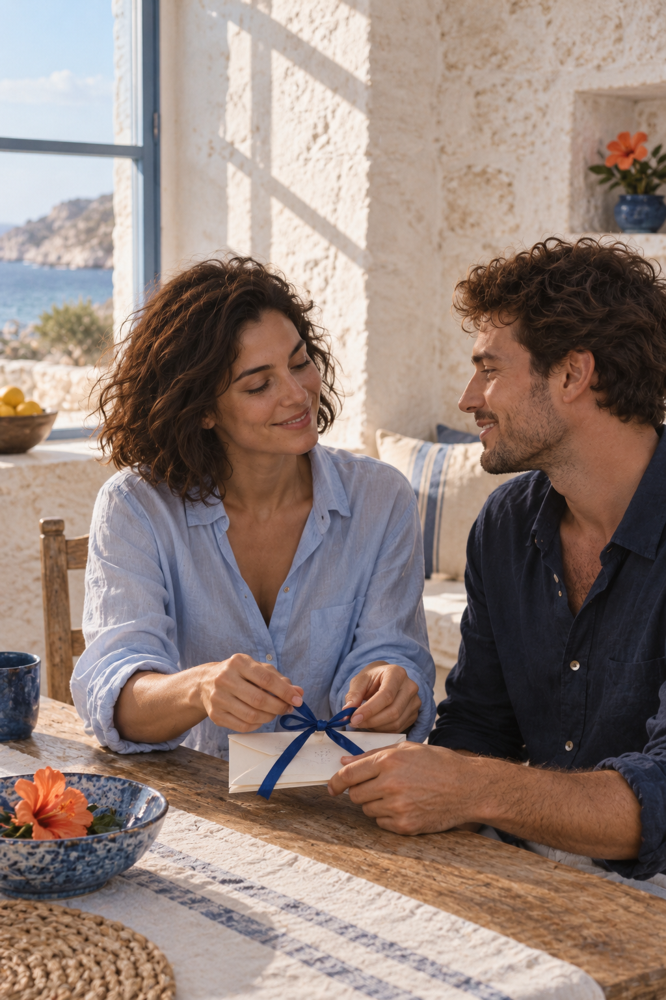
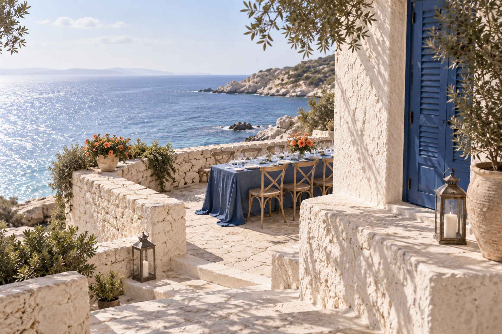

Дети
Будем рады гостям любого возраста. Если едете с ребёнком, укажите это в ответе, чтобы мы подготовили место.
Приглашение на свадьбу / 2027

Письмо вам
Всё, что нам хочется от этого дня, — услышать ваш смех за одним длинным столом. Мы выбрали место, где утро пахнет солью, а вечером можно остаться ещё на час просто потому, что хорошо.
Мы очень ждём встречи. Ниже — время, место и всё, что поможет собраться без спешки.

Наш маленький ритуал
«Сначала мы собирались отправить сообщение. Потом нашли старые конверты, синюю ленту и провели целое утро за столом. Так этот день уже начался».
Эта история и люди вымышлены. Для реальной пары здесь нужен их собственный рассказ и разрешённые фотографии.
Где встретимся
Небольшая площадка над водой. Встречаемся у входа на террасу в 16:00, церемония начнётся в 17:00.
Вымышленный адрес для демонстрации
Приморск, улица Морского Света, 7, терраса «Белый берег». Пожалуйста, не стройте маршрут по этим данным.

12 июня, суббота
Что надеть
Нам близки белый, голубой и глубокий синий. Яркий коралловый аксессуар — по желанию, не требование.
Пожелания
Если захотите поздравить нас подарком, нам будет радостно получить открытку с несколькими словами от вас. Список подарков и бронь в этом демо не предусмотрены.
Не беспокойтесь о букетах: после праздника мы уедем. Письмо или общий снимок останутся с нами надолго.
Дорога и ночлег
Это вымышленная площадка: здесь нет действующих маршрутов, бронирования и обещаний трансфера.
Перед встречей
Будем рады гостям любого возраста. Если едете с ребёнком, укажите это в ответе, чтобы мы подготовили место.
В анкете можно отметить предпочтения и аллергию. В реальном приглашении это передаётся организатору только с вашим согласием.
Основная встреча на открытом воздухе. План на случай дождя должен быть подтверждён реальной площадкой.
Пожалуйста, ответьте до 20 мая 2027 года. В этом макете ответы не сохраняются и никому не отправляются.
Вопросы
Да. Пожалуйста, укажите количество детей в ответе. В настоящем приглашении пара сможет предусмотреть место, но программа присмотра пока не заявлена.
Это демонстрация вымышленного места, поэтому подтверждённых парковки и трансфера нет. В настоящем приглашении появятся только проверенные сведения.
Укажите её в ответе. Демо ничего не отправляет, поэтому для настоящего мероприятия понадобится рабочая гостевая форма и согласие.
До 20 мая 2027 года. Этот срок относится только к вымышленной истории.
Ваш ответ
Пожалуйста, ответьте до 20 мая 2027 года. Анкета здесь — локальная демонстрация: данные не сохраняются и не отправляются.
До встречи у моря
Спасибо, что нашли время для нас. Мы уже представляем этот день с вами.
Художественный прототип · вымышленная пара, дата и адрес · кадры созданы ИИ · не опубликованное приглашение